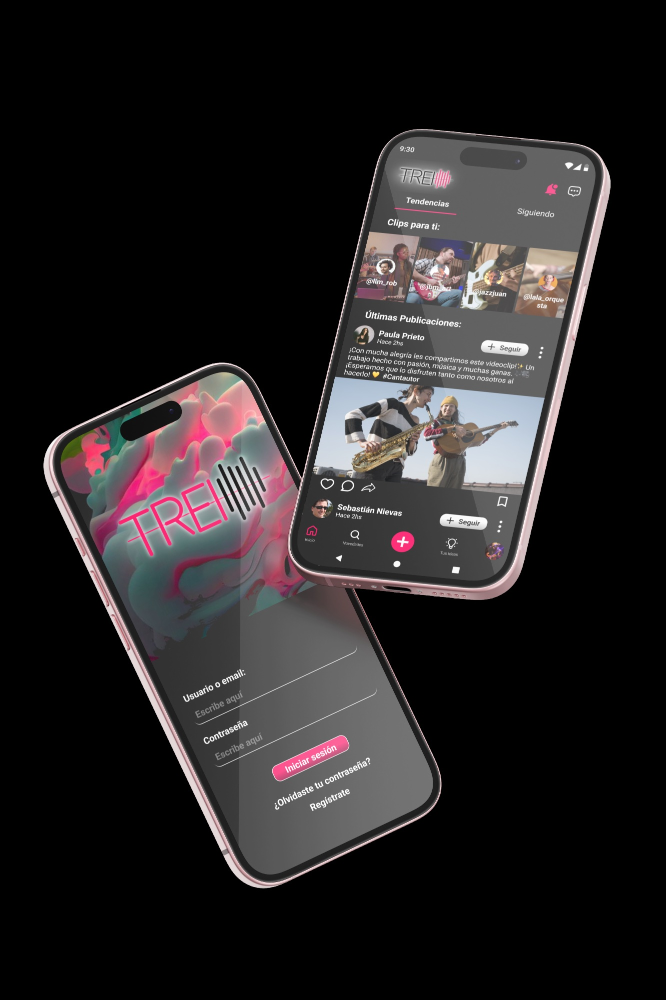
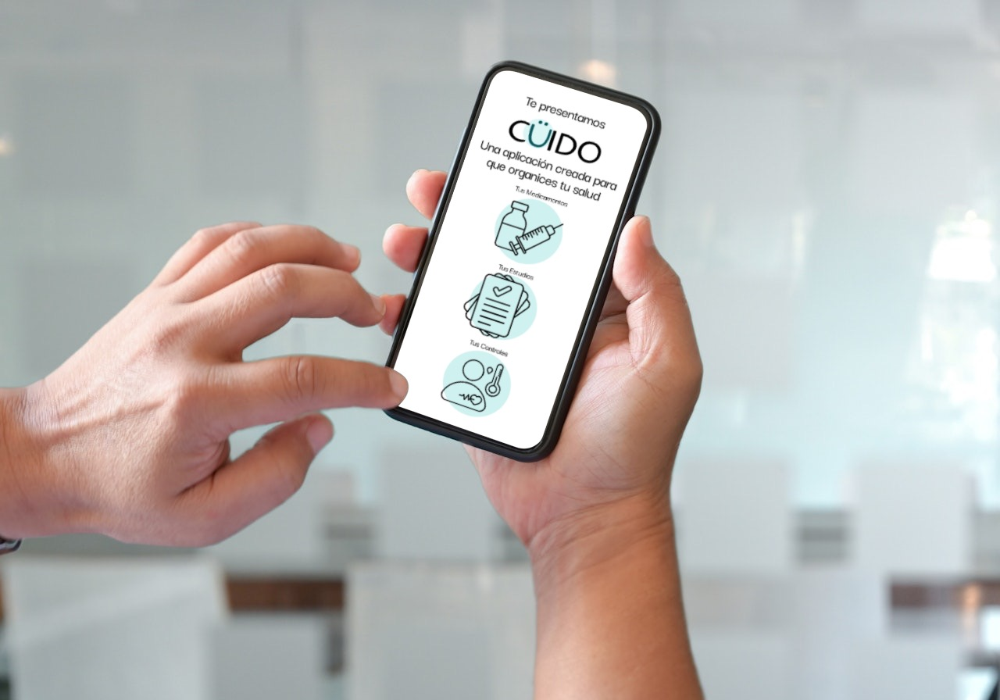
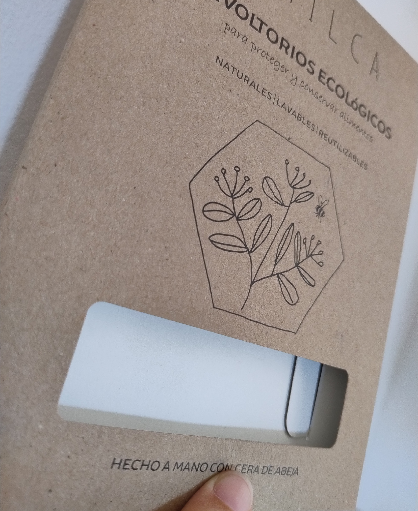
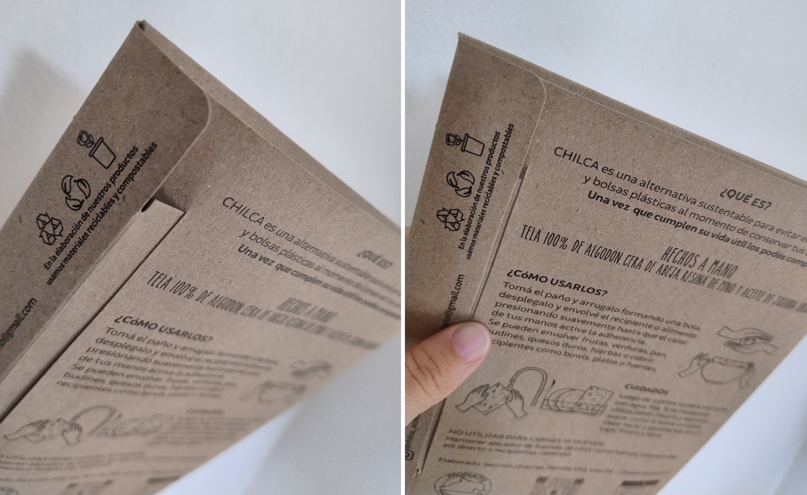
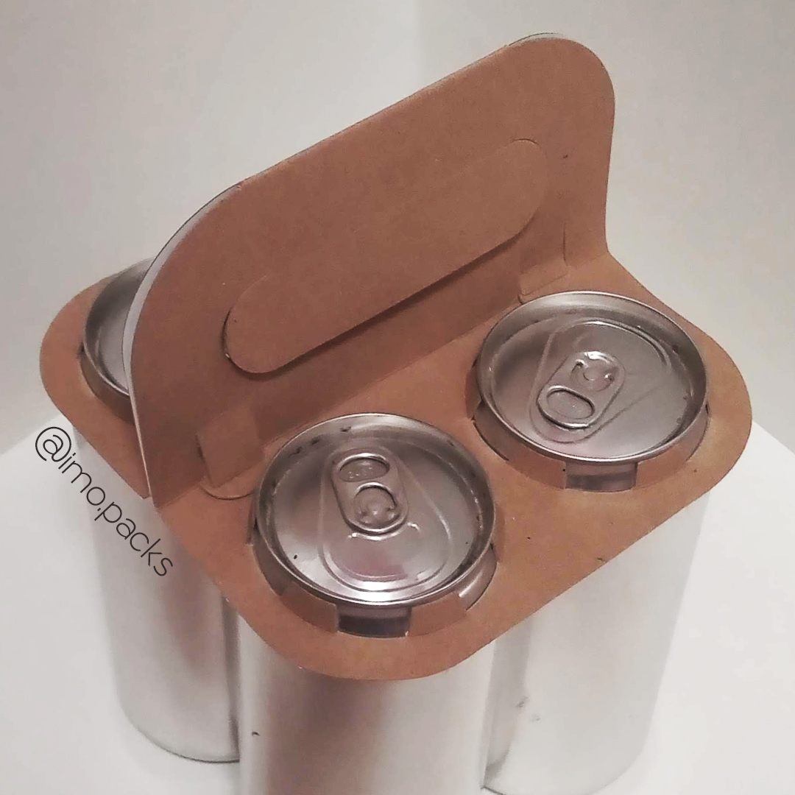
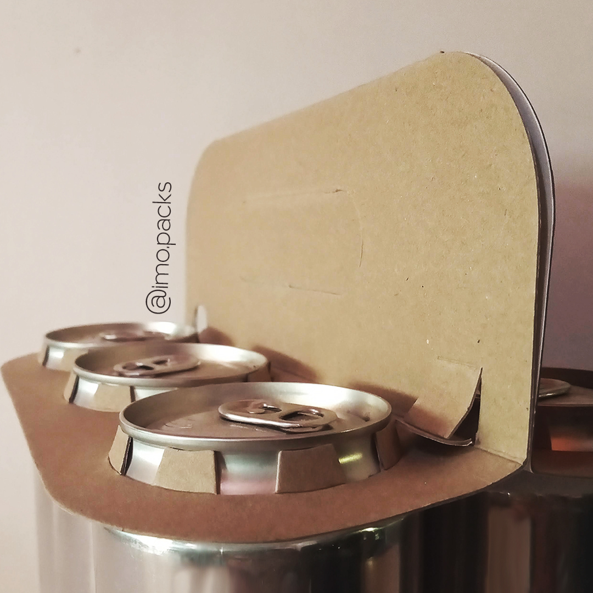
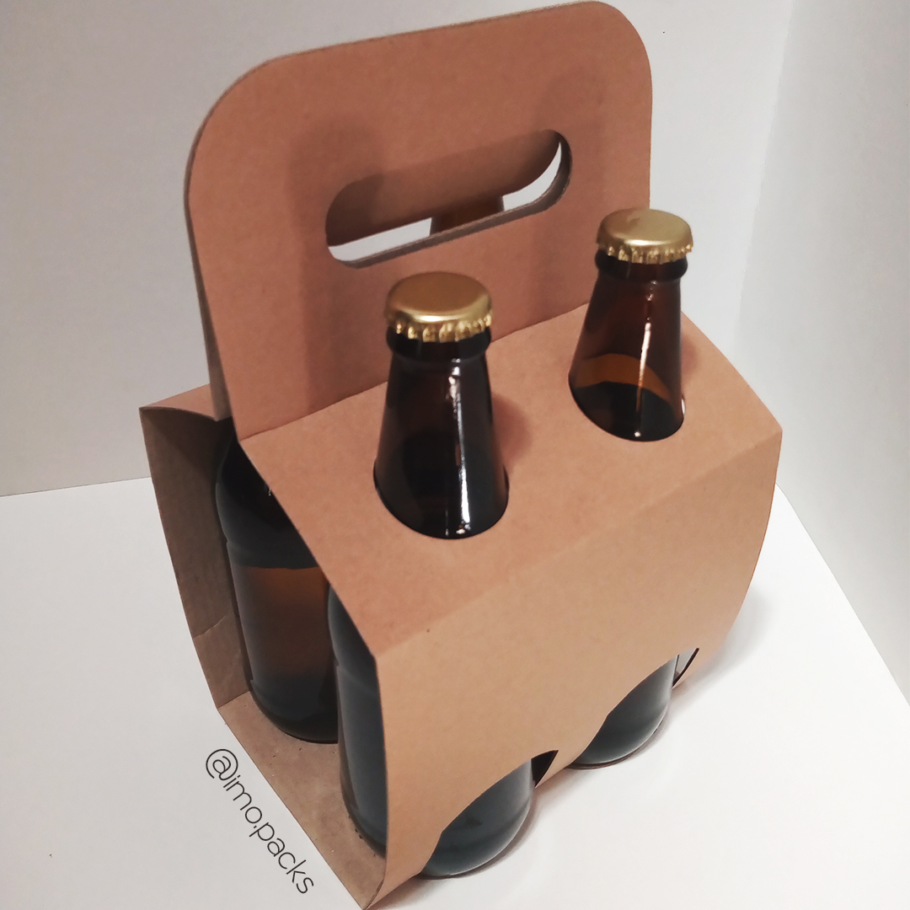
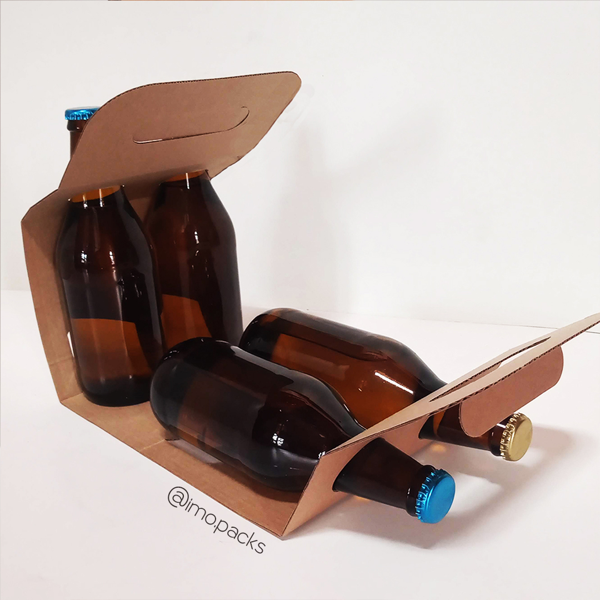

Graduada en Diseño Industrial en la Universidad Nacional de Córdoba (FAUDI). Formación en pensamiento sistémico, ergonomía, procesos de fabricación y diseño centrado en el usuario.
Fundé y dirigí Imo.packs durante cinco años — diseñando, produciendo y escalando un sistema de packaging funcional a 97 clientes B2B en toda Argentina. La familia de productos fue reconocida con el Sello de Diseño Cordobés 2021.
Hoy trabajo como diseñadora de productos digitales y UX aplicando la misma mirada: analizar el contexto, entender a quien lo usa y el negocio detrás — documentar para quien lo construye, diseñar para que funcione.
La información disponible antes de tomar una decisión inmobiliaria viene siempre de la misma fuente: dueños o inmobiliarias con intereses propios. No existe una plataforma que centralice la experiencia real de quienes ya vivieron en esas propiedades.
El objetivo fue diseñar una Web-App que rompa esa asimetría — permitiendo buscar propiedades y compartir reseñas honestas basadas en experiencias reales de vivienda.
Sin reseñas no hay usuarios, sin usuarios no hay reseñas. Para resolver ese ciclo, propuse un modelo de adquisición basado en canales de confianza indirectos — B2B2C.
En lugar de buscar al usuario de forma orgánica y masiva, integramos a profesionales de oficios (plomeros, electricistas, albañiles) e inmobiliarias para que actúen como dinamizadores, incentivando que ellos mismos soliciten reseñas a sus clientes directos tras cada servicio.
Para validar la propuesta de manera ágil, operativicé el traspaso de diseño a desarrollo usando Lovable. Los flujos asistidos por IA me permitieron convertir los componentes y el design system estructurado en Figma en una Web-App funcional — no un prototipo clickeable, sino código real.
Esto garantizó que la arquitectura de información y la lógica de negocio se testearan en un entorno de desarrollo real antes del despliegue.
Por un lado, la falta de visibilidad en el mercado dificulta conseguir trabajo y construir experiencia laboral. Por el otro, no existe un soporte digital que acompañe el proceso creativo: registrar una idea en el momento en que surge — en audio, texto o partitura — para seguir trabajando en ella sin perderla.
Dos necesidades distintas, sin una solución que las contemple juntas.
A través de encuestas específicas a músicos en Latinoamérica, investigamos sus rutinas de práctica, hábitos en redes sociales y cómo capturan sus ideas durante el proceso creativo. Los hallazgos dieron forma al mapa de empatía y definieron la voz y el tono de la plataforma.

Los resultados de consultas, estudios y análisis están distribuidos por distintos centros de salud, cada uno con su propio sistema. Cuando el paciente necesita acceder a su historia clínica completa, debe pedir acceso a cada centro por separado — o imprimir todo.
El gasto de papel que esto implica, multiplicado por los millones de pacientes que circulan diariamente por el sistema de salud, es un problema de escala. Y más grave: la pérdida de datos clínicos lleva a estudios que no llegan a analizarse, o que deben rehacerse.
Este problema se intensifica en personas que viajan por trabajo y en quienes llevan el control de salud de sus hijos.
CÜIDO le permite al paciente reunir en un solo lugar los datos de distintos profesionales, centros de salud, especialidades y ubicaciones geográficas. La información puede compartirse con cualquier profesional de la salud, con las medidas de seguridad necesarias para proteger los datos.

Imo.packs nació del cruce entre el diseño industrial y el emprendimiento. Durante cinco años diseñé, produje y escalé una familia de soluciones de packaging funcional con foco en la experiencia del usuario final, la comunicación y el negocio.
La familia de productos fue reconocida con el Sello de Diseño Cordobés 2021 por ser un sistema funcional, documentado y optimizado, en consistencia con el entorno y el mercado.





